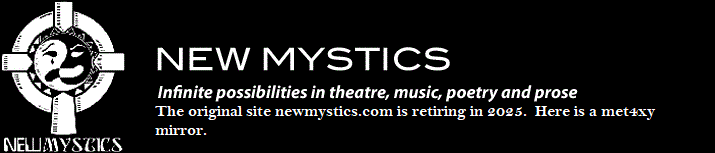
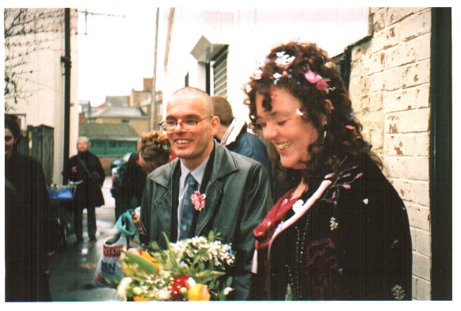

|  | |
| Home Jester-Knight Literature Film Music Visual Art Tributes Submissions Links Contact |
Literature Jo Salmon  Biography I write because no-one seems to listen to me when I speak. Little girls should be seen and not heard and it is not ladylike to shout. So I write everything down. And I mean EVERYTHING, all my thoughts, plans, feelings, lists, menus, budgets and timetables. I try to be as descriptive and as honest and creative as I can, and now and again there are what I call my 'diamonds in the dust'. My journal, my journey is my goal. I write because I can. I am lucky to have that freedom now. It hasn't always been so. I was for 7 years trapped in an Orwellian nightmare of a marriage where I had to justify and therefore be aware of every word I spoke and every tone of voice, every facial expression so I dared not write anything down in case it could be used in evidence against me. When that marriage was over, I searched through the attic for my previous life. It was all gone. There were no photographs of me as a child, no old birthday cards from my auntie Vi and, worst of all, all the writing I had ever done had just disappeared. I had become an un-person. And I had written a lot. I started a journal, novel when I was 5, written teenage angst poetry about my solvent abuse experiences, fairy stories for my daughter I gave birth to when I was 16, letters published in CND magazines in the early 80s, songs dedicated to Krishna, diaries that I kept when I was in a psychiatric hospital when I was 18-19. For the last 14 years, I've written for the sake of sanity. 'LOLLY AND THE PATH OF POPPIES' was written with a view to helping my mum to come to terms with the drug addiction of my now dead little sister. Comedy monologues have often come from things that I find slightly frightening or sinister. I very rarely go out to write 'a piece of writing' now; it just all spews out into volumes of A4 spiral-bound notebooks. I write for myself primarily or for whoever might pick it up, when I'm no longer in the room, and take an interest. The last 14 years have not been easy. My children have all had difficult teens, my soul-mate has turned out to be the most eccentric person I have ever met and I have been diagnosed as having a bipolar condition that many people seem to believe I could control if I wanted to - which is like demanding a diabetes sufferer to start producing insulin and start eating sugar like a man. My writing contains my extremes, helps me remember that no matter how low I go, life comes around again to be vibrant and healthy and happy. Click below for Jo's work Poems 2 (.pdf) NEW!!! More Poems 2 (.pdf) I Do (.pdf) 5 Poems (.pdf) Maze Market (.pdf) More Poems (.pdf) Three Short Pieces (.pdf) Four Short Pieces (.pdf) Three Short Works (.pdf) Poems (.pdf) |